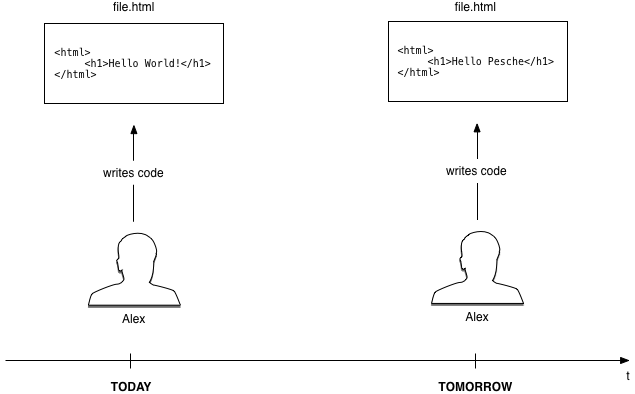
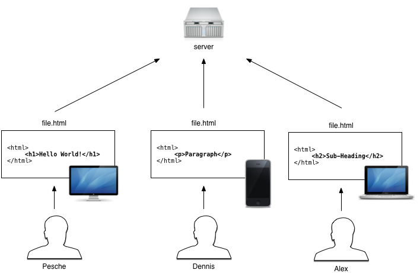
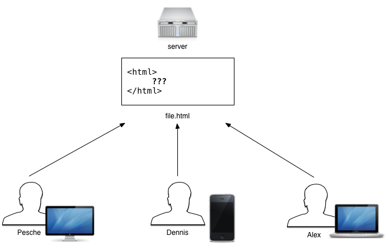
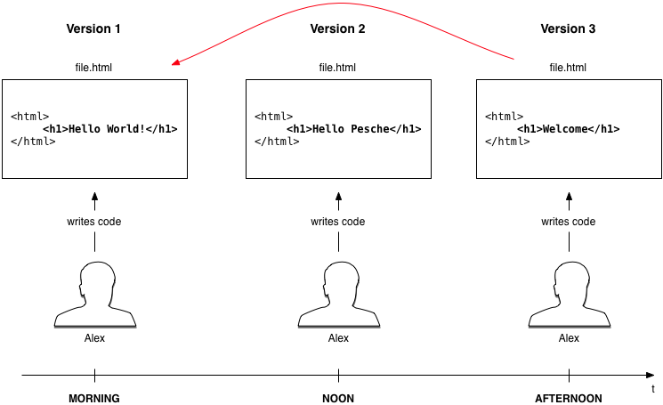
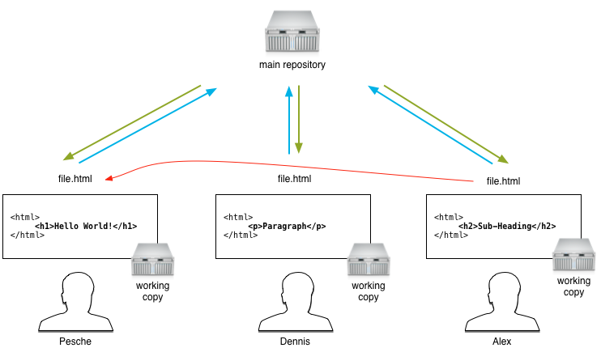
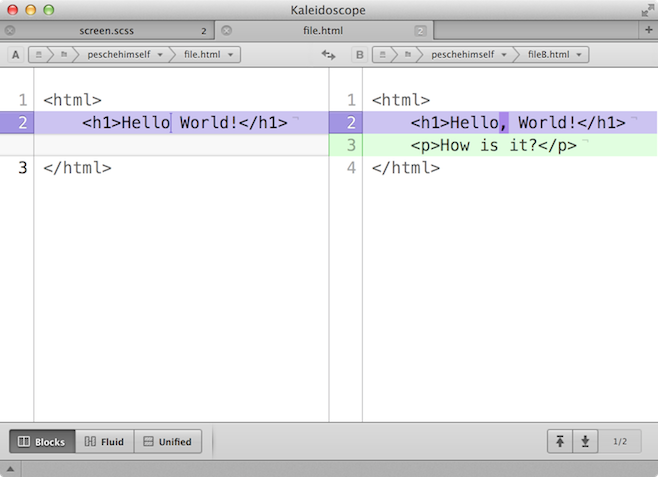
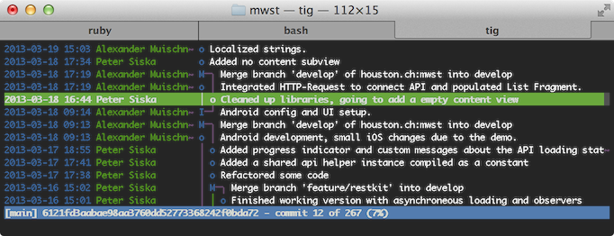
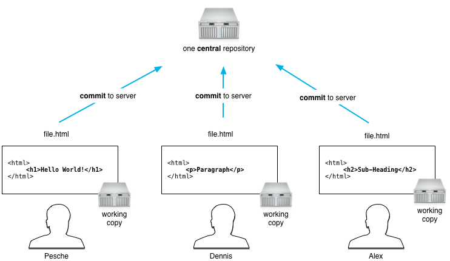
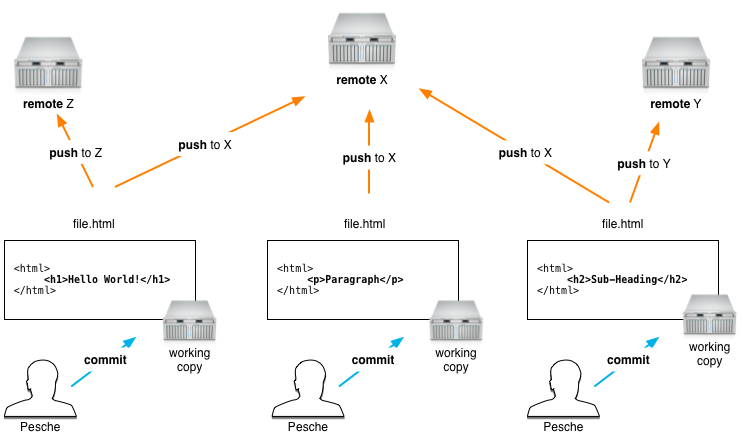
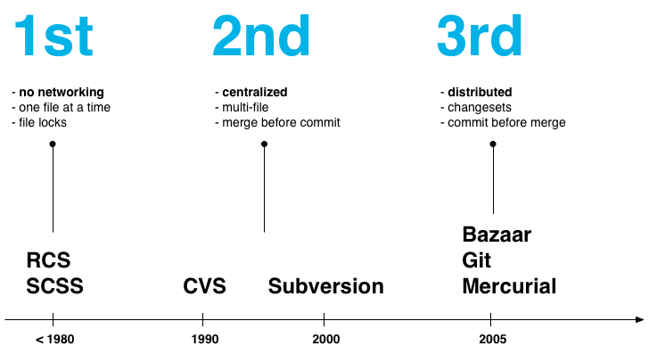

In software development, Git (/ɡɪt/) is a distributed revision control and source code management (SCM) system with an emphasis on speed. Initially designed and developed by Linus Torvalds for Linux kernel development, Git has since been adopted by many other projects.